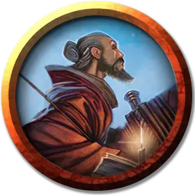

Прорицатель
Diviner
Средний Гуманоид (Любая раса), любое мировоззрение

Класс Доспеха 12 (15 с доспехами мага)
Хиты 67 (15к8)
Скорость 30 футов
| мод | спас | ||
|---|---|---|---|
| СИЛ | 9 | −1 | −1 |
| ЛОВ | 14 | +2 | +2 |
| ТЕЛ | 11 | +0 | +0 |
| мод | спас | ||
|---|---|---|---|
| ИНТ | 18 | +4 | +7 |
| МДР | 12 | +1 | +4 |
| ХАР | 11 | +0 | +0 |
Навыки История +7, Магия +7
Чувства пассивное Восприятие 11
Опасность 8 (3900 опыта)
Бонус мастерства +3
Среда обитания Город
Особенности
Языки. Знает любые четыре языка.
Использование заклинаний. Прорицатель является заклинателем 15-го уровня. Его базовой характеристикой является Интеллект (Сл спасброска от заклинания 15, +7 к попаданию атаками заклинаниями). У него подготовлены следующие заклинания волшебника:
• Заговоры (неограниченно): огненный снаряд [fire bolt], свет [light], волшебная рука [mage hand], сообщение [message], меткий удар [true strike]
• 1 уровень (4 ячейки): обнаружение магии [detect magic],* падение пёрышком [feather fall], доспехи мага [mage armor]
• 2 уровень (3 ячейки): обнаружение мыслей [detect thoughts], поиск предметов [locate object], палящий луч [scorching ray]
• 3 уровень (3 ячейки): подсматривание [clairvoyance],* полёт [fly], огненный шар [fireball]
• 4 уровень (3 ячейки): магический глаз [arcane eye],* град [ice storm], каменная кожа [stoneskin]
• 5 уровень (2 ячейки): ментальная связь Рэри [Rary’s telepathic bond], наблюдение [scrying]
• 6 уровень. (1 ячейка): множественное внушение [mass suggestion], Истинное зрение [true seeing]*
• 7 уровень (1 ячейка): замедленный огненный шар [delayed blast fireball], телепортация [teleport]
• 8 уровень (1 ячейка): лабиринт [maze]
*Заклинание Прорицания уровня 1 или выше.
Знамение (Перезаряжается после сотворения Прорицателем заклинания Прорицания уровня 1 или выше). Когда Прорицатель или видимое ему существо совершает бросок атаки, проверку характеристик или спасбросок, Прорицатель может бросить к20 и выбрать результат этого броска вместо броска атаки, проверки характеристик или спасброска.
Действия
Боевой посох. Рукопашная атака оружием: +2 к попаданию, досягаемость 5 футов, одна цель. Попадание: Дробящий урон 2 (1к6-1) или дробящий урон 3 (1к8-1) если используется двумя руками
Описание
Прорицатели – специализированные волшебники, знающие, что знание – сила. Они могут действовать отчужденно и таинственно, намекая на предзнаменования и тайны, или они могут быть всезнайками, раскрывающими секреты и проникая в суть, чтобы повысить свой собственный статус или репутацию.